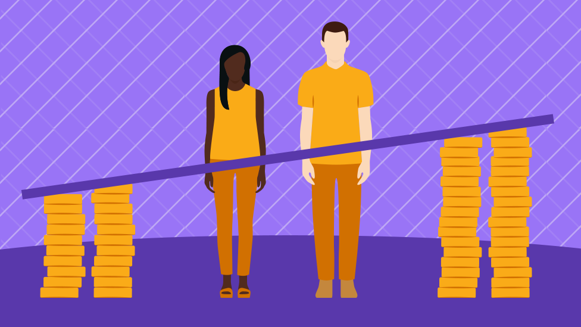
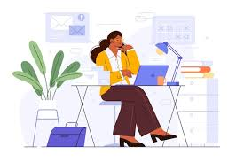

.png)
💰 Gender Pay Gap
Millions of women are impacted by the gender wage gap on a daily basis, it is more than simply a statistic. It draws attention to the fact that although having the same credentials, experience and skills as men, women are still frequently underappreciated for their labour in society.
This is a matter of fairness, respect and acknowledgement rather than just money. Being underpaid shows the unfair and harmful idea that women's efforts are somehow less significant. This imbalance accumulates over time and has an impact on women's professions as well as their chances, confidence and financial independence.
For me, this problem is incredibly unfair and annoying. No one should receive a lower salary due to their gender. For many women worldwide the same effort, skill and dedication should translate into equal compensation but this is still not the case.
It’s even more worrying because this difference often goes unnoticed or ignored.
Many people don't realise how big the gap may be or how it affects women's lives over time. This is the reason it's so crucial to talk about the problem and raise awareness.
I firmly think that everyone has a part to play in building a more equitable and just future and that change is necessary. The gender pay gap should not exist and the fact that it does indicates how much more work needs to be done.

📊 Key Facts
- Its a reality that many women still earn less than men for doing the same work and this gap often grows bigger in leadership roles making it harder for women to feel fully values and recognised.
- Women face slower career growth beacuse they dont recieve the same oppourtunities or support as men which can definietly be discouraging and frustrating.
- Balancing work with demands of childcare and family responsibilities is a challenge many women face and this can impact their long term earnings and career progress despite the hard work and sacrifices they make everyday.
- Some industries have a larger pay gap than others.

🔍 Why Does It Happen?
The gender pay gap exists for many reasons including workplace discrimination, less leadership opportunities for women and social expectations around caregiving roles. These factors often combine to create barriers that limit women’s career progression and earning potential over time. Many women find themselves juggling the demands of work alongside family responsibilities which can mean taking breaks or reducing hours that can impact long-term income and advancement. It’s important to recognise these challenges and work towards creating a more supportive environments where everyone has an equal chance to succeed.
🌍 Real-World Impact
The gender pay gap has a real long lasting impact on women’s financial independence, their ability to progress in their careers and their long-term security including retirement savings. When women earn less over time it can make it harder to support themselves and their families leading to increased stress and uncertainty. Besides affecting individual women, this gap also feeds into broader social inequalities, contributing to higher rates of poverty and limiting opportunities for future generations. Addressing the pay gap isn’t just about fairness at work it’s more about creating a society where everyone has the chance to thrive and live with dignity.
💡 How Can We Reduce It?
- Promote equal pay for equal work to ensure fairness at every level.
- Promote inclusive cultures where diversity is valued and everyone feels empowered to succeed.
- Challenge and break gender stereotypes and biases that limit potential in the workplace.
- Encourage companies to regularly review pay structures and progression policies for equality.
- Encourage transparency in salaries so everyone understands what is being paid and why.
- Provide accessible childcare support to reduce the career impact of caregiving responsibilities.
- Implement flexible working arrangements to help balance career and family commitments.
- Support women in leadership roles by providing mentorship, training and opportunities.
🚀 What Can You Do?
You can help by raising awareness, supporting fair pay policies and speaking out against inequality whenever you see it. Encourage open conversations about pay and career oppourtunities, mentor, uplift women around you, hold oragnisations accountable so they can create inclusive and equiptable environments. Every big or small action contributes to building a more fair future for everyone.
Visit your User Profile to set your own goals and take action.